PP 并行：1F1B/1F1B Interleaved#
abstract：先前介绍的 Gpipe 存在硬件利用率低，动态内存压力大的问题，本篇介绍新的流水线技术来规避
PipeDream 基本原理#
回顾一下 Gpipe 流水并行存在动态峰值内存大的问题，如图所示：若输入 batch 被划分为 n 个 micro-batch，则对于任意 device，需要缓存 n 份前向激活值（图中 n=8）.
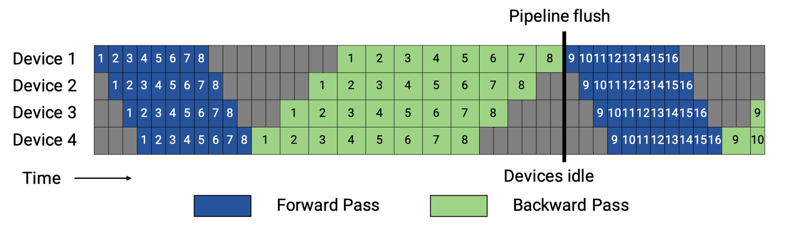
PipeDream 流水线并行采取了1FIB的策略，很好的规避了硬件内存有限的问题。
在流水线并行（pipeline parallel）中，每次前向计算产生的 activation 只有在对应的反向计算完成之后才能释放（即使使用了 Checkpointing 技术）。因此，要尽可能地节省 activation 占用的显存，就需要尽量缩短每份 activation 在内存中停留的时间，也就是让它们尽早被释放。要做到这一点，关键便是让每 micro-batch 的反向计算尽早开始并完成。
具体做法是，将反向计算的优先级调高，使得编号较小的 micro-batch 的反向步骤，能在编号较大的 micro-batch 的前向步骤之前执行。以一个多阶段（stage）流水线为例：如果我们让最后一个 stage 在完成当前 micro-batch 的前向计算后，立刻启动该 micro-batch 的反向计算，那么后续的各个 stage 就能更早地收到反向计算的数据，进而开始它们自己的反向计算。
通过“前向做一批、反向紧跟一批”（1F1B one-forward-one-backward）的调度策略，不仅能够减少 activation 在显存中的滞留时间，还能平衡各个 stage 的计算负载，最终最大化显存利用效率并降低整体训练时的内存峰值需求。
因此我们实现了将激活值数量上限从 micro-batch 数量 m 变成 pipeline stage 阶段 p，但只是降低了设备的峰值内存，并没有降低气泡大小，因此空泡率与 Gpipe 保持一致：
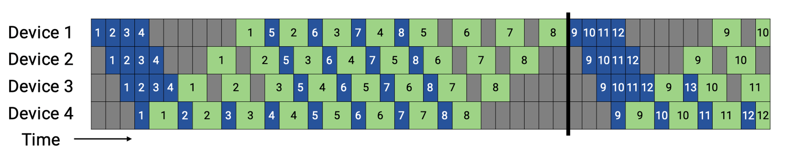
Virtual pipeline 基本原理#
后续 Megatron-LM 在 1F1B 的基础上做了 Interleaved 1F1B 的优化，减少了流水线气泡，也就是本篇介绍的虚拟流水并行（Virtual Pipeline Parallelism，简称 VPP）。
VPP 的核心在于，让一个物理层面的 device 虚拟成为 v 个 devices，device 从计算 1 个或连续 layer 段到计算 v 个不相邻的 layer，如图所示：GPU1 之前只负责 layer1 或 layer1+layer2 层的计算，经过虚拟化流水线后，负责 layer0 和 layer5 层的计算，使得 layer1 层计算完成后无需等待 layer2 的计算，可以直接进入 GPU2 进行计算，从而减少等待空泡时间，此处 v 被称为虚拟流水线阶段（virtual pipeline stage）。
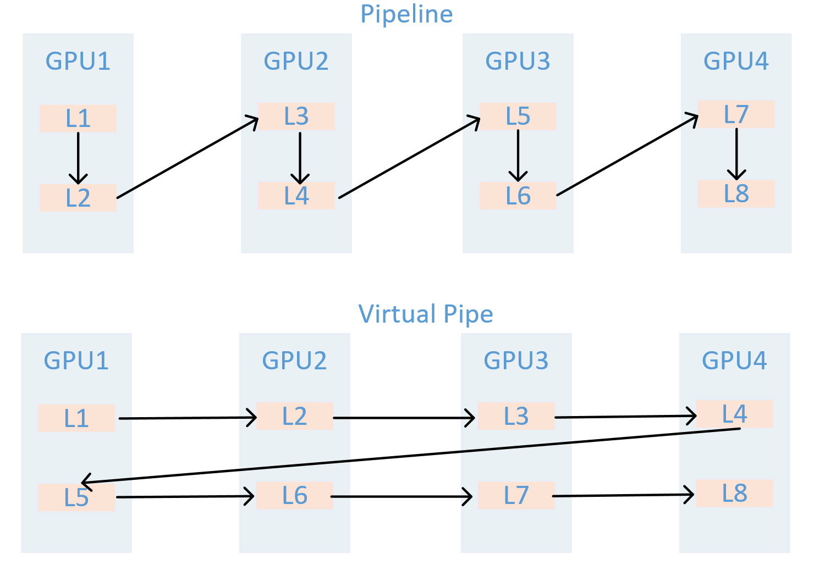
假设模型总层数为 16，张量并行大小 tp=1，流水线并行大小 pp=4，虚拟流水线并行大小 v=2，则模型将被划分为 4 * 2 = 8 个阶段，每个阶段包含 16 / 8 = 2 个层。前向的顺序为 GPU 1 -> GPU 2 -> GPU 3 -> GPU 4 -> GPU 1 -> GPU 2 -> GPU 3 -> GPU 4。
在设备数量不变的情况下，分出更多的流水线阶段，这样可以让流水线中每个 stage 更小，因而下个 stage 的等待时间更短，气泡更小。需要注意的是，m 需要是 p 的整数倍。
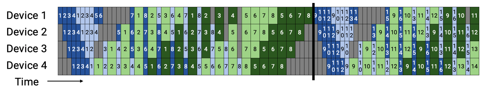
𝑚 为 micro-batch，𝑝为 pipeline stages，v 为 virtual pipeline stage,完成 v 个 layer 段中一个的前向、后向时间分别为 \(t_f/v\) 和 \(t_b/v\),流水线气泡的耗时 \(t_{pd}^{int}\):
因此可得出 VPP 的空泡率：
空泡率除了跟 micro batch 成反比，与 v 也成反比。
需要注意的是，VPP 是以增加通信量为代价，换取更低的空泡比率，相比于 1FB 现在的气泡占比就减少到了 1/v。但是流水线之间的通信量也增加了 v 倍。对于一个 pipeline stage，里面包括多个 Transformer layer，所以现在相当于流水线的 stage 增加了，通信量也会增加。特别是当 global 的 batch 越来越大的时候，这个通信开销就会更显著。
新兴 PP 技术（扩充）#
PipeDream-2BW#
PipeDream-2BW 是一种面向超大模型的异步流水线并行方法：它将模型切分为多个阶段并复制多路流水线，在 1F1B 调度下通过“双缓冲”权重更新和梯度合并技术，大幅降低显存占用与通信开销；内置的自动化 Planner 根据设备内存和互联拓扑搜索最优阶段划分与复制宽度，并可选激活重计算；在多卡集群上训练大规模 Transformer 模型时，相较于传统流水线并行，吞吐量可提升数倍，同时保留与数据并行一致的权重更新语义。
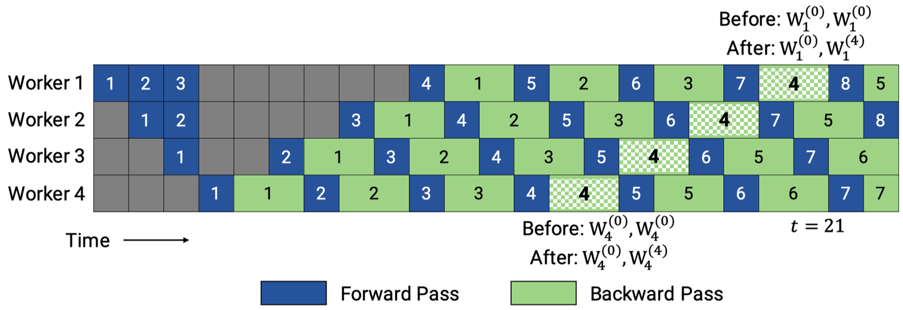
ZB-V schedule#
ZB-V schedule 是一种面向流水线并行的内存高效零气泡调度策略：它将 p 个阶段划分为 2p 个模型块，并给每个 worker 分配两个模型块，按照从首到尾再返回首的 V 型顺序进行分配，以确保每个微批次的前向和对权重的后向都在同一 worker 上执行，从而利用后向权重计算填充流水线空隙；在与 1F1B 相同的显存约束下，可在正向、后向输入与权重后向计算时间相等时实现近零气泡；同时，该调度保持各 worker 峰值激活内存均衡，兼顾吞吐与显存效率。
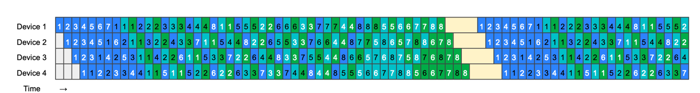
Hanayo wave-like pipeline#
Hanayo 是一种波浪式流水线并行策略：它将模型划分为 S 个阶段并将小批次分成 W 个波（wave），以波浪形的顺序在各阶段交错执行前向和后向计算，能够将流水线气泡比例降低至原来的 1/(2W) 且无需复制模型，从而保持与主流方法一致的权重和激活内存占用；同时，其轻量级运行时引擎将调度逻辑与执行和通信优化解耦，支持在多卡集群上灵活部署；在对 GPT 和 BERT 类模型、最多 32 块 GPU 的测试中，Hanayo 相较最先进方案实现了最高 30.4%的吞吐量提升
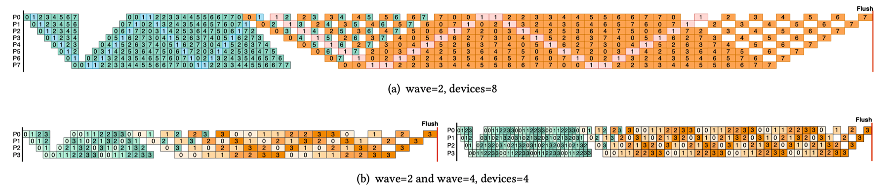
分布式框架里的 PP 实现#
模型运行入口与 PP 配置：
pretrain_gpt.py main 函数调用 pretrain->get_model,get_model 函数判断 pipeline 的划分策略
Megatron-LM/pretrain_gpt.py
if __name__ == "__main__":
# Temporary for transition to core datasets
train_valid_test_datasets_provider.is_distributed = True
# Optionally enable inprocess restart on pretrain
pretrain, store = inprocess_restart.maybe_wrap_for_inprocess_restart(pretrain)
pretrain(
train_valid_test_datasets_provider,
model_provider,
ModelType.encoder_or_decoder,
forward_step,
args_defaults={'tokenizer_type': 'GPT2BPETokenizer'},
extra_args_provider=add_modelopt_args if has_nvidia_modelopt else None,
store=store,
)
pretrain 函数内部调用 setup_model_and_optimizer 函数，该函数内部调用 get_model
Megatron-LM/megatron/training/training.py/def pretrain
# Model, optimizer, and learning rate.
timers('model-and-optimizer-setup', log_level=0).start(barrier=True)
app_metrics['app_build_optimizer_start_time'] = one_logger_utils.get_timestamp_in_ms()
model, optimizer, opt_param_scheduler = setup_model_and_optimizer(
model_provider, model_type, checkpointing_context=checkpointing_context
)
Megatron-LM/megatron/training/training.py/def setup_model_and_optimizer
def setup_model_and_optimizer(
model_provider_func,
model_type,
no_wd_decay_cond=None,
scale_lr_cond=None,
lr_mult=1.0,
checkpointing_context=None,
):
"""Setup model and optimizer."""
args = get_args()
timers = get_timers()
one_logger = get_one_logger()
model = get_model(model_provider_func, model_type)
unwrapped_model = unwrap_model(model)
get_model 通过 get_args 函数拿到启动脚本设置的超参，参数设置如图所示：
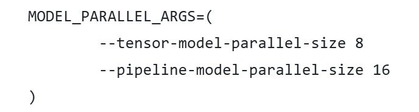
Megatron-LM/megatron/training/training.py/def get_model
def get_model(model_provider_func, model_type=ModelType.encoder_or_decoder, wrap_with_ddp=True):
"""Build the model."""
args = get_args()
args.model_type = model_type
# Build model.
此处分为两种情况讨论，以下是启用虚拟管道(VPP)的模型构建，判断条件如第一个 if 所示。判定逻辑标记了：只有第一个 rank 做输入，最后一个 rank 做输出，利用 model_provider_func 函数计算当前 Rank 该“切”哪一段 Transformer 层并实例化，最终把所有 Rank 按顺序放入 model 列表，供后面的流水线调度器循环调用。
Megatron-LM/megatron/training/training.py/def get_model
if (
mpu.get_pipeline_model_parallel_world_size() > 1
and args.virtual_pipeline_model_parallel_size is not None
):
if model_type == ModelType.encoder_and_decoder:
assert (
args.encoder_pipeline_model_parallel_size == 0
), "Interleaved schedule not supported for model with encoder on separate PP rank"
model = []
for i in range(args.virtual_pipeline_model_parallel_size):
# Set pre_process and post_process only after virtual rank is set.
pre_process = mpu.is_pipeline_first_stage(ignore_virtual=False, vp_stage=i)
post_process = mpu.is_pipeline_last_stage(ignore_virtual=False, vp_stage=i)
this_model = model_provider_func(
pre_process=pre_process, post_process=post_process, vp_stage=i)
this_model.model_type = model_type
this_model.vp_stage = i
model.append(this_model)
否则启用 PipeDream 流水线并行，根据模型类型和并行度，将编码器和解码器模块合理地拆分到不同 GPU，保证前向/反向传递的正确性与高效性。
Megatron-LM/megatron/training/training.py/def get_model
else:
pre_process = mpu.is_pipeline_first_stage()
post_process = mpu.is_pipeline_last_stage()
add_encoder = True
add_decoder = True
if model_type == ModelType.encoder_and_decoder:
if mpu.get_pipeline_model_parallel_world_size() > 1:
rank = mpu.get_pipeline_model_parallel_rank()
first_decoder_rank = args.encoder_pipeline_model_parallel_size
world_size = mpu.get_pipeline_model_parallel_world_size()
pre_process = rank == 0 or rank == first_decoder_rank
post_process = (rank == (first_decoder_rank - 1)) or (rank == (world_size - 1))
add_encoder = mpu.is_inside_encoder(rank)
add_decoder = mpu.is_inside_decoder(rank)
model = model_provider_func(
pre_process=pre_process,
post_process=post_process,
add_encoder=add_encoder,
add_decoder=add_decoder,
)
else:
model = model_provider_func(pre_process=pre_process, post_process=post_process)
model.model_type = model_type
return model
PP 模型实例化：（没找全）
通过上述 get_model 函数里的 model_provider_func 函数构建模型实例，model_provider_func 并不是 Megatron-Core 库里一个单独的全局函数，而是由各个预训练脚本(如 pretrain_gpt.py)定义并传入核心训练流程的回调。
Megatron-LM/pretrain_gpt.py
def model_provider(
pre_process=True, post_process=True, vp_stage: Optional[int] = None
) -> Union[GPTModel, megatron.legacy.model.GPTModel]:
构建 GPTModel 实例，
Megatron-LM/megatron/core/models/gpt/gpt_model.py
class GPTModel(LanguageModule):
def __init__(...):
# Transformer.
self.decoder = TransformerBlock(
config=self.config,
spec=transformer_layer_spec,
pre_process=self.pre_process,
post_process=self.post_process,
vp_stage=vp_stage,
)
PP 获取需要执行的层数：（没看懂）
TransformerBlock 注册通过 get_num_layers_to_build 计算当前 Stage 包含几个 Transformer Layer
Megatron-LM/megatron/core/transformer/transformer_block.py
def get_num_layers_to_build(config: TransformerConfig, vp_stage: Optional[int] = None) -> int:
return num_layers_to_build
class TransformerBlockSubmodules:
def _get_block_submodules(...):
if isinstance(spec, TransformerBlockSubmodules):
return spec
# ModuleSpec here is generally assumed to be for a transformer layer that
# is implemented in `transformer_layer.py` or if it subclasses
# `BaseTransformerLayer` from the `transformer_layer.py` file.
elif isinstance(spec, ModuleSpec):
if issubclass(spec.module, TransformerBlock):
return spec.submodules
elif issubclass(spec.module, BaseTransformerLayer):
num_layers = get_num_layers_to_build(config, vp_stage)
return TransformerBlockSubmodules(
layer_specs=[spec] * num_layers, layer_norm=LayerNormImpl
)
else:
raise Exception(f"specialize for {spec.module.__name__}.")
else:
raise Exception(f"specialize for {type(spec).__name__}.")
在 GPT 模型运行示例中每个 Stage build_layer 的个数为 number_lyaer = L / PP_num
Megatron-LM/megatron/core/transformer/transformer_block.py
class TransformerBlock(MegatronModule):
"""Transformer class."""
def __init__（
self.num_layers_per_pipeline_rank = len(self.layers)
def _build_layers(self):
# Transformer layers.
# @jcasper can we improve how we deal with layer_number?
# currently it's only used in CoreAttention?
# if self.apply_query_key_layer_scaling:
# coeff = self.layer_number
# self.norm_factor *= coeff
def build_layer(layer_spec, layer_number):
global_layer_number = layer_number + get_transformer_layer_offset(
self.config, self.vp_stage
) # 1-based index
if self.config.heterogeneous_block_specs:
layer_config = self.config.get_config_for_layer(global_layer_number)
else:
layer_config = self.config
执行 PP 训练：
GPT 训练调用 pretrain -> train -> train_step，执行一个 iteration, train_step 函数通过 get_forward_backward_fun()函数进入 schedulers.py 模块，并根据当前的 PP 模式返回 forward_backward_pipelining_with_interleaving 执行前向和反向计算
Megatron-LM/megatron/training/training.py
def train_step(forward_step_func, data_iterator, model, optimizer, opt_param_scheduler, config):
"""Single training step."""
...
# Forward pass.
forward_backward_func = get_forward_backward_func()
losses_reduced = forward_backward_func(
forward_step_func=forward_step_func,
data_iterator=data_iterator,
model=model,
num_microbatches=get_num_microbatches(),
seq_length=args.seq_length,
micro_batch_size=args.micro_batch_size,
decoder_seq_length=args.decoder_seq_length,
forward_only=False,
adjust_tensor_shapes_fn=adjust_tensor_shapes_fn,
)
Megatron-LM/megatron/core/pipeline_parallel/schedules.py
def get_forward_backward_func():
pipeline_model_parallel_size = parallel_state.get_pipeline_model_parallel_world_size()
if pipeline_model_parallel_size > 1:
if parallel_state.get_virtual_pipeline_model_parallel_world_size() is not None:
forward_backward_func = forward_backward_pipelining_with_interleaving
else:
forward_backward_func = forward_backward_pipelining_without_interleaving
else:
forward_backward_func = forward_backward_no_pipelining
return forward_backward_func
NPU0 执行 stage0（不清晰）
执行 Forward 计算，选择 forward_backward_pipelining_without_interleaving 模式 (以 Pipeline 1F1B 为例，即 PipeDream) 先关闭梯度更新，等所有的 microbatch 执行完毕才更新梯度。过程如图所示：
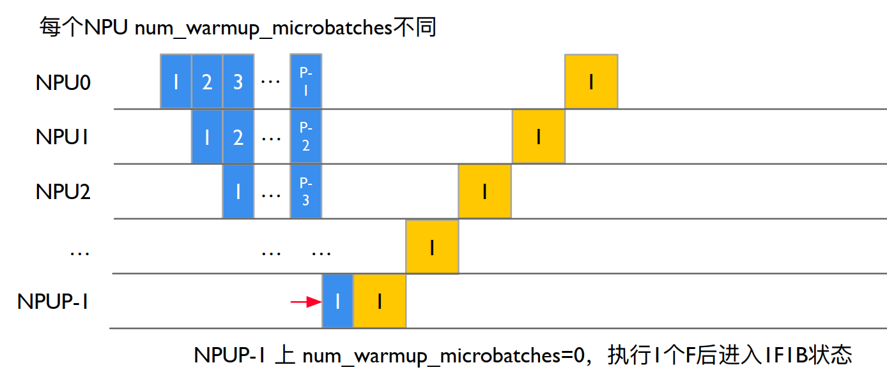
部分代码展示：
其中：num_microbatches：总的 micro batch 个数。num_warmup_microbatches：当前 rank warmup 阶段需要计算，直到 1F1B 的 microbatch 的个数。
num_microbatches_remaining：当前 rank 还剩下多少个 microbatch 执行才到 1F1B 阶段，即 num_microbatches - num_warmup_microbatches。
Megatron-LM/megatron/core/pipeline_parallel/schedules.py
def forward_backward_pipelining_without_interleaving(
...
micro_batch_size: int,
...
):
...
disable_grad_sync()
# Compute number of warmup microbatches.
num_warmup_microbatches = (
parallel_state.get_pipeline_model_parallel_world_size()
- parallel_state.get_pipeline_model_parallel_rank()
- 1
)
num_warmup_microbatches = min(num_warmup_microbatches, num_microbatches)
num_microbatches_remaining = num_microbatches - num_warmup_microbatches
NPU0 完成前向计算，如图所示：
NPU0 在 stage0 阶段没有其它的 Stage 激活输入，因此忽略 recv_forward()函数，forward_step 调用 forward_step_func 真正调用模型执行：
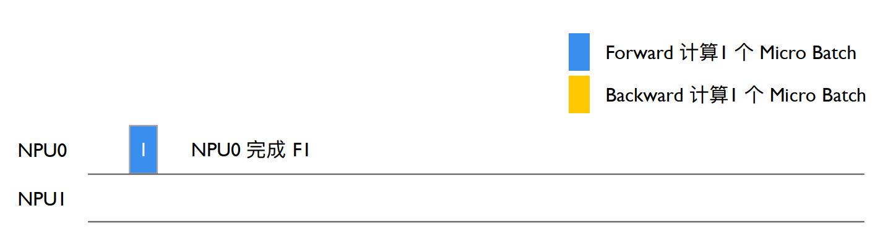
Megatron-LM/megatron/core/pipeline_parallel/schedules.py
# Run warmup forward passes.
for i in range(num_warmup_microbatches):
# Decide to checkpoint all layers' activations of the current micro-batch
if max_outstanding_backprops is not None:
checkpoint_activations_microbatch = (
i % max_outstanding_backprops
>= config.num_microbatches_with_partial_activation_checkpoints
)
else:
checkpoint_activations_microbatch = None
input_tensor = recv_forward(
recv_tensor_shapes, config, parallel_state.is_pipeline_first_stage()
)
output_tensor, num_tokens = forward_step(
forward_step_func,
data_iterator,
model,
num_microbatches,
input_tensor,
forward_data_store,
config,
collect_non_loss_data,
checkpoint_activations_microbatch,
check_first_val_step(first_val_step, forward_only, i == 0),
current_microbatch=i,
encoder_decoder_xattn=encoder_decoder_xattn,
)
def forward_step(...)
...
if config.enable_autocast:
context_manager = torch.autocast("cuda", dtype=config.autocast_dtype)
else:
context_manager = contextlib.nullcontext()
with context_manager:
if checkpoint_activations_microbatch is None:
output_tensor, loss_func = forward_step_func(data_iterator, model)
else:
output_tensor, loss_func = forward_step_func(
data_iterator, model, checkpoint_activations_microbatch
)
NPU0 前向传递激活，如图所示：
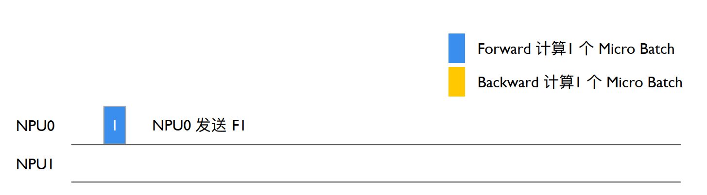
NPU0 上输出 Stage0 output_tensor 后 send_forward 发送给下一个 Stage，通过 P2P_communication.send_forward 发送 output_tensor，通过 torch.distributed.P2POp 异步 send output_tensor，最后调用 torch.cuda.synchronize() 执行同步
Megatron-LM/megatron/core/pipeline_parallel/schedules.py
send_forward(
output_tensor, send_tensor_shapes, config, parallel_state.is_pipeline_last_stage()
)
def send_forward(output_tensors, tensor_shapes, config, is_last_stage):
"""Wrapper for p2p_communication.send_forward used with non-interleaving schedule."""
if not isinstance(output_tensors, list):
output_tensors = [output_tensors]
for output_tensor, tensor_shape in zip(output_tensors, tensor_shapes):
if tensor_shape is None:
continue
p2p_communication.send_forward(output_tensor, config, is_last_stage)
Megatron-LM/megatron/core/pipeline_parallel/p2p_communication.py
if wait_on_reqs and len(reqs) > 0:
for req in reqs if isinstance(reqs, list) else reqs.values():
req.wait()
reqs = None
if (
(config.batch_p2p_comm and config.batch_p2p_sync)
# The lists below have a size > 1 only when ETP ≠ DTP,
# meaning this synchronization is required when ETP ≠ DTP.
or len(tensor_recv_prev_list) > 1
or len(tensor_recv_next_list) > 1
):
# To protect against race condition when using batch_isend_irecv().
# User should assert that we have a modern enough PyTorch to not need this
torch.cuda.synchronize()
NPU0 继续计算：
NPU0 继续执行 forward_step,Stage0 前向计算得到第二个 output_tensor,利用 sedn_forward_recv_backward 函数发送 output_tensor 等待 backward，进入 1F1B 状态，通过 send_backward_recv_backward 底层试下通过 P2PPp 异步，send output_tesnor，且异步 recv tensor_recv_next，最后调用 synchronize()等待 recv backward，NPU0 进入等待状态。
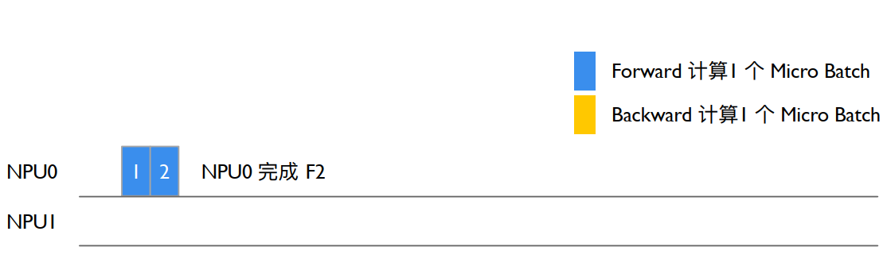
Megatron-LM/megatron/core/pipeline_parallel/schedules.py
def forward_backward_pipelining_without_interleaving(...):
def enable_grad_sync():
# Run warmup forward passes.
for i in range(num_warmup_microbatches):
# Decide to checkpoint all layers' activations of the current micro-batch
if max_outstanding_backprops is not None:
checkpoint_activations_microbatch = (
i % max_outstanding_backprops
>= config.num_microbatches_with_partial_activation_checkpoints
)
else:
checkpoint_activations_microbatch = None
input_tensor = recv_forward(
recv_tensor_shapes, config, parallel_state.is_pipeline_first_stage()
)
output_tensor, num_tokens = forward_step(
forward_step_func,
data_iterator,
model,
num_microbatches,
input_tensor,
forward_data_store,
config,
collect_non_loss_data,
checkpoint_activations_microbatch,
check_first_val_step(first_val_step, forward_only, i == 0),
current_microbatch=i,
encoder_decoder_xattn=encoder_decoder_xattn,
)
NPU1 进行前向计算：
其过程同 GPU0 一致，如图所示：
num_warmup_microbatches=0，进入 1F1B 状态，num_microbatches_remaining=3，recv_forward 调用 P2POp 异步 recv，NPU1 最后调用 synchronize() 执行同步等待 NPU0 Stage0 输出，从而保证 NPU0 to NPU1 的执行顺序。
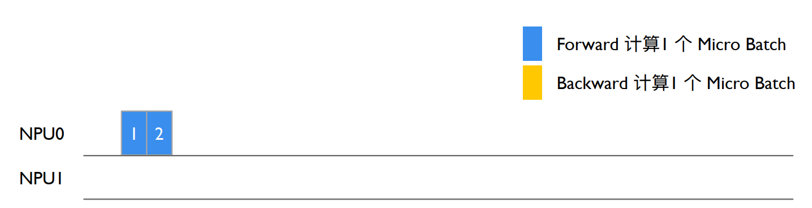
NPU1 recv_forward 等待 NPU0 Stage0 发送 intput_tensor 后 NPU1 forward_step 设置 iNPUt_tensor，实现 NPU0&NPU1 交换输入输出 NPU1 进入 1F1B 循环，forward_step_func 调用 GPTModel 执行前向计算。NPU1 上 TransformerBlock 执行第一个 Stage，Pre_process=False，即不会把 iNPUt_embeddings 作为 ransformer 的输入，使用 NPU0 Stage0 输入的 iNPUt_tensor 作为输入执行得到 output tensor。
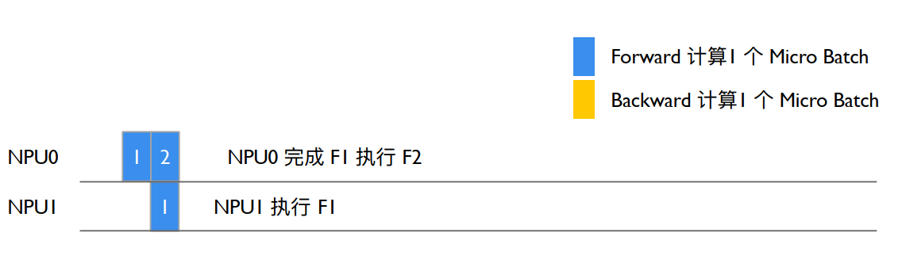
Megatron-LM/megatron/core/transformer/transformer_block.py
class TransformerBlock(MegatronModule):
"""Transformer class."""
def __init__(
self,
config: TransformerConfig,
spec: Union[TransformerBlockSubmodules, ModuleSpec],
post_layer_norm: bool = True,
pre_process: bool = False,
post_process: bool = True,
model_comm_pgs: ModelCommProcessGroups = None,
vp_stage: Optional[int] = None,
):
super().__init__(config=config)
self.submodules = _get_block_submodules(config, spec, vp_stage)
self.post_layer_norm = post_layer_norm
self.pre_process = pre_process
self.post_process = post_process
self.vp_stage = vp_stage
def forward(...):
if not self.pre_process:
# See set_input_tensor()
hidden_states = self.input_tensor
示例中 NPU1 Stage1 是最后一层 Staege，因此 post_process=True,执行 is_pipeline_last_stage 计算 GPT 模型的 output_tensor 和 loss。
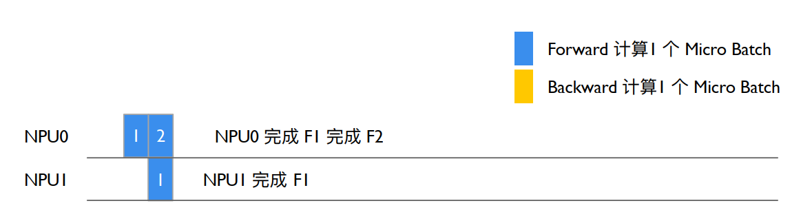
Megatron-LM/megatron/core/transformer/transformer_block.py
class TransformerBlock(MegatronModule):
"""Transformer class."""
def __init__(
self,
config: TransformerConfig,
spec: Union[TransformerBlockSubmodules, ModuleSpec],
post_layer_norm: bool = True,
pre_process: bool = True,
post_process: bool = True,
model_comm_pgs: ModelCommProcessGroups = None,
vp_stage: Optional[int] = None,
):
Megatron-LM/megatron/core/pipeline_parallel/schedules.py
def forward_step(...)
...
if parallel_state.is_pipeline_last_stage(ignore_virtual=False, vp_stage=vp_stage):
if not collect_non_loss_data:
outputs = loss_func(output_tensor)
if len(outputs) == 3:
output_tensor, num_tokens, loss_reduced = outputs
if not config.calculate_per_token_loss:
output_tensor /= num_tokens
output_tensor /= num_microbatches
else:
# preserve legacy loss averaging behavior (ie, over the number of microbatches)
assert len(outputs) == 2
output_tensor, loss_reduced = outputs
output_tensor *= parallel_state.get_context_parallel_world_size()
output_tensor /= num_microbatches
forward_data_store.append(loss_reduced)
else:
data = loss_func(output_tensor, non_loss_data=True)
forward_data_store.append(data)
NPU1 反向执行 Stage1：
执行完 forward_step 后执行 backward_step 得到 iNPUt_tensor_grad，并 进入 1F1B 状态，执行 send_backward_recc_forward->_communication->异步发送 iNPUt_tensor_grad 给 NPU0 并等待 NPU0 发送下一个 MB forward 结果。
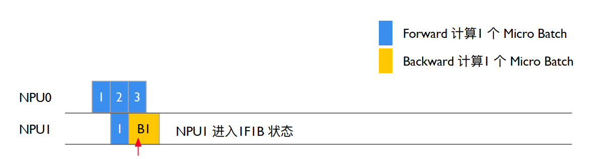
Megatron-LM/megatron/core/pipeline_parallel/schedules.py
def forward_backward_pipelining_without_interleaving(...):
# Enable grad sync for the last microbatch in the batch if the full
# backward pass completes in the 1F1B stage.
if num_warmup_microbatches == 0 and last_iteration:
if config.grad_sync_func is None or rank == 0:
enable_grad_sync()
input_tensor_grad = backward_step(
input_tensor, output_tensor, output_tensor_grad, model_type, config
)
if last_iteration:
input_tensor = None
send_backward(
input_tensor_grad,
recv_tensor_shapes,
config,
parallel_state.is_pipeline_first_stage(),
)
else:
input_tensor = send_backward_recv_forward(
input_tensor_grad,
recv_tensor_shapes,
config,
parallel_state.is_pipeline_first_stage(),
)
def send_backward_recv_forward(input_tensor_grads, tensor_shapes, config, is_first_stage):
"""Wrapper for p2p_communication.send_backward_recv_forward used
with non-interleaving schedule."""
if not isinstance(input_tensor_grads, list):
input_tensor_grads = [input_tensor_grads]
input_tensors = []
for input_tensor_grad, tensor_shape in zip(input_tensor_grads, tensor_shapes):
if tensor_shape is None:
input_tensors.append(None)
continue
input_tensor = p2p_communication.send_backward_recv_forward(
input_tensor_grad, tensor_shape, config, is_first_stage
)
input_tensors.append(input_tensor)
return input_tensors
NPU0 反向执行 Stage0：
NPU0 Srage0 等待 send_backward_recv_forward 被唤醒后获得 NPU1 Staege1 发送的 output_tensor_grad，NPU0 Stage0 执行 backward_step 输出 intput_tensor_grad，NPU0 计入 1F1B 状态，NPU0 num_warmup_mbs=1, num_mbs_remaining=2，进入 1F1B 循环，执行 forward_step 执行 Starge1 前向计算得到 output_tensor(Forward 3)，执行 send_forward_recv_backward 发送 output_tensor 等待 backward，异步 recv tensor_recv_next，调用 synnchronize()同步等待 backward，NPU0 进入等待状态。
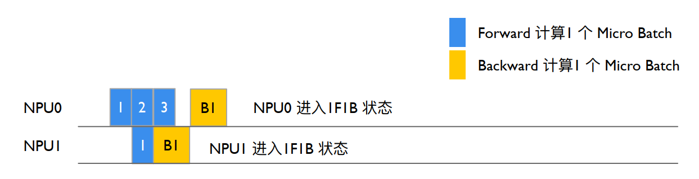
Megatron-LM/megatron/core/pipeline_parallel/schedules.py
# Run 1F1B in steady state.
for i in range(num_microbatches_remaining):
last_iteration = i == (num_microbatches_remaining - 1)
# Decide to checkpoint all layers' activations of the current micro-batch
if max_outstanding_backprops is not None:
checkpoint_activations_microbatch = (
(i + num_warmup_microbatches) % max_outstanding_backprops
) >= config.num_microbatches_with_partial_activation_checkpoints
else:
checkpoint_activations_microbatch = None
output_tensor, num_tokens = forward_step(...)
total_num_tokens += num_tokens
if forward_only:
send_forward(
output_tensor, send_tensor_shapes, config, parallel_state.is_pipeline_last_stage()
)
if not last_iteration:
input_tensor = recv_forward(
recv_tensor_shapes, config, parallel_state.is_pipeline_first_stage()
)
else:
output_tensor_grad = send_forward_recv_backward(
output_tensor, send_tensor_shapes, config, parallel_state.is_pipeline_last_stage()
)
Megatron-LM/megatron/core/pipeline_parallel/p2p_communication.py
if recv_prev:
if config.pipeline_dtype is None:
raise RuntimeError("pipeline_dtype must be provided if recv_prev is True")
if tensor_shape is None:
raise RuntimeError(
"tensor_shape must be specified if recv_prev is True. "
"Common tensor_shape is (seq_length, micro_batch_size, hidden_size)"
)
tensor_recv_prev_func = create_tensor_recv_prev
if recv_next:
if config.pipeline_dtype is None:
raise RuntimeError("dtype must be provided if recv_next is True")
if tensor_shape is None:
raise RuntimeError(
"tensor_shape must be specified if recv_next is True. "
"Common tensor_shape is (seq_length, micro_batch_size, hidden_size)"
)
tensor_recv_next_func = create_tensor_recv_next
NPU1 反向执行 Stage1：
同理，NPU1 Stage1 上执行 send_backward_recv_forward 同步等待收到 NPU0 Stge0 发送 iNPUt_tensor（Forward 2）,NPU1 Stage1 将 iNPUt_tensor（Forward 2）作为 TransformerBlock 执行 forward_step,得到输出 output_tensor。
NPU0 执行 Stage0
NPU0 等待 send_forward_recv_backward 执行 NPU1 输出 output_grad(B2)，执行 backward_step 输出 iNPUt_tensor_grad（B2），NPU0 num_warmup_mbs=1, num_mbs_remaing=2, i=2，退出 1F1B，进入 cooldown backwrd pass enable_grad_sync 打开模型梯度更新，recv_backward 等待 NPU1 发送最后一个 mbs 的 backward（B3），NPU0 准备更新模型的梯度和参数。
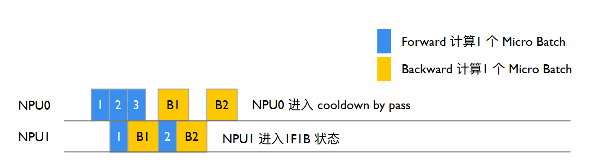
NPU1 执行 Stage1
NPU1 Stage1 执行 send_backward_recv_forward 同步等待 iNPUt(F3),NPU1 num_warmup_mbs=0，num_mbs_remaining=3，进入 1F1B 循环,将 NPU0 Stage0 发送 iNPUt(F3)作为 TransformerBlock 的 iNPUt 计算前向,forward_step()输出 output (F3)执行 backward_step()得到 iNPUt_tensor_grad(B3),send_backward()异步发送 iNPUt_tesnor_grad(B3)给 NPU0。
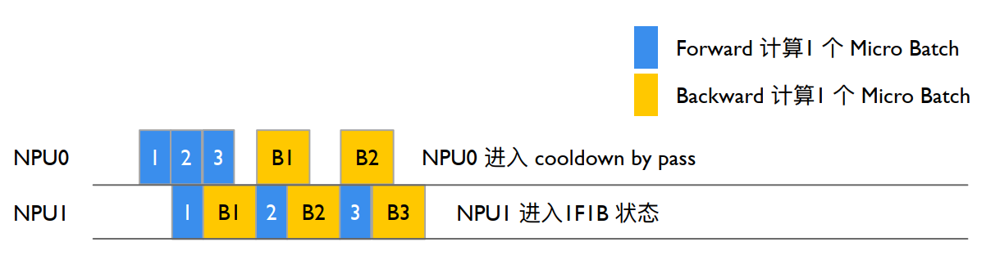
NPU0 执行 Stage0 后，执行完完整的 iteration
NPU0 等待 cooldown backward 的 recv_backward()获得 NPU1 输出(B3)，执行 backward_step()输出 iNPUt_tensor_grad(B3)，forward_backward_func()返回 LOSS，enable_grad_sync()累加更新模型梯度，finalize_model_grads_func()更新模型参数。
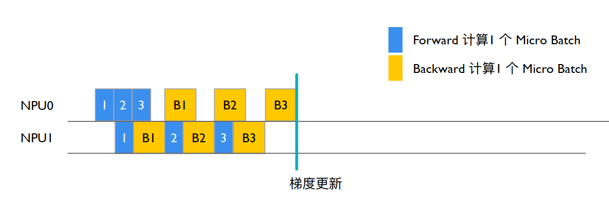
Megatron-LM/megatron/core/pipeline_parallel/schedules.py
def get_forward_backward_func():
pipeline_model_parallel_size = parallel_state.get_pipeline_model_parallel_world_size()
if pipeline_model_parallel_size > 1:
if parallel_state.get_virtual_pipeline_model_parallel_world_size() is not None:
forward_backward_func = forward_backward_pipelining_with_interleaving
else:
forward_backward_func = forward_backward_pipelining_without_interleaving
else:
forward_backward_func = forward_backward_no_pipelining
return forward_backward_func
def forward_backward_pipelining_without_interleaving(...)
def enable_grad_sync():
output_tensor_grad = recv_backward(
send_tensor_shapes, config, parallel_state.is_pipeline_last_stage()
)
input_tensor_grad = backward_step(
input_tensor, output_tensor, output_tensor_grad, model_type, config
)
send_backward(
input_tensor_grad,
recv_tensor_shapes,
config,
parallel_state.is_pipeline_first_stage(),
)
# Launch any remaining grad reductions.
if no_sync_context is not None:
enable_grad_sync()
if config.grad_sync_func is not None:
config.grad_sync_func(model.parameters())
if config.finalize_model_grads_func is not None and not forward_only:
# If defer_embedding_wgrad_compute is enabled we need to do the
# weight gradient GEMM's here.
finish_embedding_wgrad_compute(config, embedding_module)
# Finalize model grads (perform full grad all-reduce / reduce-scatter for
# data parallelism, layernorm all-reduce for sequence parallelism, and
# embedding all-reduce for pipeline parallelism).
config.finalize_model_grads_func(
[model], total_num_tokens if config.calculate_per_token_loss else None
)
if config.timers is not None:
config.timers('forward-backward').stop()
if hasattr(config, 'enable_cuda_graph') and config.enable_cuda_graph:
create_cudagraphs()
return forward_data_store
总结与思考#
参考文献#
https://zhuanlan.zhihu.com/p/650744349
https://zhuanlan.zhihu.com/p/701716465
https://blog.csdn.net/just_sort/article/details/135981391
https://blog.csdn.net/HaoBBNuanMM/article/details/134095326
https://github.com/NVIDIA/Megatron-LM